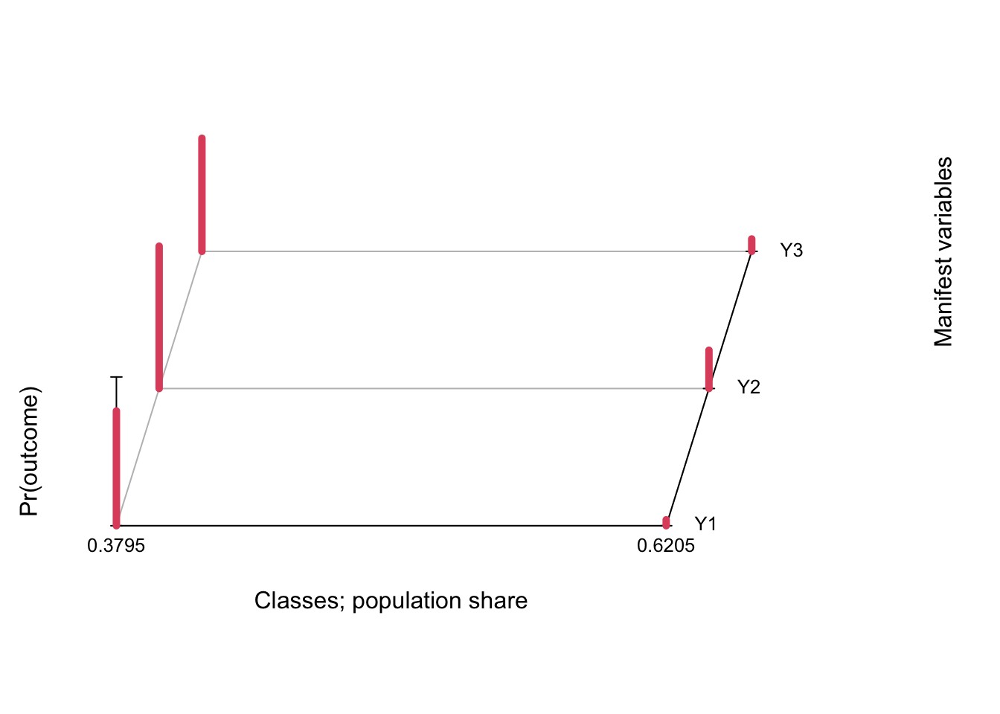

Exercise: Anti-religious speech
Exercises
Read the data from the General Social Survey 1987. It’s not old, it’s a classic!
antireli <- read.csv("https://lauraboeschoten.github.io/LCA_GESIS/Extra/Day_1/antireli_data.csv")
head(antireli) Y1 Y2 Y3
1 1 1 1
2 1 1 1
3 1 1 1
4 1 1 1
5 1 1 1
6 1 1 1Show the data as pattern frequencies.
| Y1 | Y2 | Y3 | Freq |
|---|---|---|---|
| 1 | 1 | 1 | 696 |
| 2 | 1 | 1 | 34 |
| 1 | 2 | 1 | 275 |
| 2 | 2 | 1 | 125 |
| 1 | 1 | 2 | 68 |
| 2 | 1 | 2 | 19 |
| 1 | 2 | 2 | 130 |
| 2 | 2 | 2 | 366 |
Question 1
Use poLCA and fit a two-class LCA to these data.
Conditional item response (column) probabilities,
by outcome variable, for each class (row)
$Y1
Pr(1) Pr(2)
class 1: 0.2284 0.7716
class 2: 0.9601 0.0399
$Y2
Pr(1) Pr(2)
class 1: 0.0429 0.9571
class 2: 0.7424 0.2576
$Y3
Pr(1) Pr(2)
class 1: 0.2395 0.7605
class 2: 0.9166 0.0834
Estimated class population shares
0.3795 0.6205
Predicted class memberships (by modal posterior prob.)
0.3736 0.6264
=========================================================
Fit for 2 latent classes:
=========================================================
number of observations: 1713
number of estimated parameters: 7
residual degrees of freedom: 0
maximum log-likelihood: -2795.376
AIC(2): 5604.751
BIC(2): 5642.873
G^2(2): 6.226158e-10 (Likelihood ratio/deviance statistic)
X^2(2): 5.549661e-10 (Chi-square goodness of fit)
Question 2
Create a profile plot.
plot(fit)
In this case the default plot is still somewhat readable, but in practice it is not the best as data visualizations go. A simple line plot does a better job (in my personal & completely subjective opinion!) and allows you to display confidence intervals to boot. We use tidy from the broom package to extract the results and ggplot to plot.
tidy(fit) %>%
filter(outcome == 2) %>%
mutate(class = as.factor(class)) %>%
ggplot(aes(variable, estimate, group = class, color = class)) +
geom_point() + geom_line() +
geom_errorbar(aes(ymin = estimate - 2*std.error,
ymax = estimate + 2*std.error), width = 0.2) +
theme_bw() + scale_color_brewer(palette = "Set2")
Question 3
How would you label the classes?
Question 4
What can you say about the estimated class sizes? What does this mean for the prevalence of the attitudes you labeled under (3)?
Question 5
Model fit
a. How many parameters are there?
b. How many unique data patterns are there (fixing the sample size \(n=1713\))?
c. Can you explain the number of degrees of freedom?
d. Can you explain the value of the
G^2(\(G^2\)) andX^2(\(\chi^2\)) statistics?